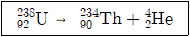
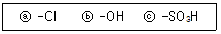
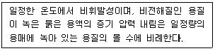
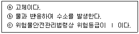
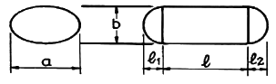
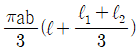
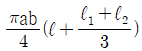
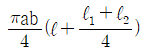
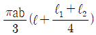

위험물산업기사 (2020-08-22 기출문제)
1과목: 일반화학
1. 액체 0.2g을 기화시켰더니 그 증기의 부피가 97℃, 740mmHg에서 80mL였다. 이 액체의 분자량에 가장 가까운 값은?
- 40
- 46
- 78
- 121
(정답률: 74%)

2. 원자량이 56인 금속 M 1.12g을 산화시켜 실험식이 MxOy인 산화물 1.60g을 얻었다. x, y는 각각 얼마인가?
- x = 1, y = 2
- x = 2, y = 3
- x = 3, y = 2
- x = 2, y = 1
(정답률: 79%)
3. 백금 전극을 사용하여 물을 전기분해할 때 (+)극에서 5.6L의 기체가 발생하는 동안 (-)극에서 발생하는 기체의 부피는?
- 2.8L
- 5.6L
- 11.2L
- 22.4L
(정답률: 75%)
4. 방사성 원소인 U(우라늄)이 다음과 같이 변화되었을 때의 붕괴 유형은?

- α 붕괴
- β 붕괴
- γ 붕괴
- R 붕괴
(정답률: 77%)
5. 다음 중 방향족 탄화수소가 아닌 것은?
- 에틸렌
- 톨루엔
- 아닐린
- 안트라센
(정답률: 56%)
6. 전자배치가 1s22s22p63s23p5인 원자의 M껍질에는 몇 개의 전자가 들어 있는가?
- 2
- 4
- 7
- 17
(정답률: 79%)
7. 황산 수용액 400mL 속에 순황산이 98g 녹아 있다면 이 용액의 농도는 몇 N 인가?
- 3
- 4
- 5
- 6
(정답률: 53%)
8. 다음 보기의 벤젠 유도체 가운데 벤젠의 치환반응으로부터 직접 유도할 수 없는 것은?

- ⓐ
- ⓑ
- ⓒ
- ⓐ, ⓑ, ⓒ
(정답률: 60%)
9. 다음 각 화합물 1mol 이 완전연소할 때 3mol의 산소를 필요로 하는 것은?
- CH3 - CH3
- CH2 = CH2
- C6H6
- CH ≡ CH
(정답률: 70%)
10. 원자번호가 7인 질소와 같은 족에 해당되는 원소의 원자번호는?
- 15
- 16
- 17
- 18
(정답률: 78%)
11. 1패러데이(Faraday)의 전기량으로 물을 전기분해 하였을 때 생성되는 기체 중 산소 기체는 0℃, 1기압에서 몇 L 인가?
- 5.6
- 11.2
- 22.4
- 44.8
(정답률: 60%)
12. 다음 화합물 중에서 가장 작은 결합각을 가지는 것은?
- BF3
- NH3
- H2
- BeCl2
(정답률: 68%)
13. 지방이 글리세린과 지방산으로 되는 것과 관련이 깊은 반응은?
- 에스테르화
- 가수분해
- 산화
- 아미노화
(정답률: 69%)
14. [OH-]=1×10-5mol/L 인 용액의 pH와 액성으로 옳은 것은?
- pH = 5, 산성
- pH = 5, 알칼리성
- pH = 9, 산성
- pH = 9, 알칼리성
(정답률: 76%)
15. 다음에서 설명하는 법칙은 무엇인가?

- 헨리의 법칙
- 라울의 법칙
- 아보가드로의 법칙
- 보일-샤를의 법칙
(정답률: 63%)
16. 질량수 52인 크롬의 중성자수와 전자수는 각각 몇 개인가? (단, 크롬의 원자번호는 24이다.)
- 중성자수 24, 전자수 24
- 중성자수 24, 전자수 52
- 중성자수 28, 전자수 24
- 중성자수 52, 전자수 24
(정답률: 81%)
17. 다음 중 물이 산으로 작용하는 반응은?
- NH4+ + H2O → NH3 + H3O+
- HCOOH + H2O → HCOO- + H3O+
- CH3COO- + H2O → CH3COOH + OH-
- HCl + H2O → H3O+ + Cl-
(정답률: 76%)
18. 일정한 온도하에서 물질 A와 B가 반응을 할 때 A의 농도만 2배로 하면 반응속도가 2배가 되고 B의 농도만 2배로 하면 반응속도가 4배로 된다. 이 경우 반응속도식은? (단, 반응속도 상수는 k 이다.)
- v = k [A][B]2
- v = k [A]2[B]
- v = k [A][B]0.5
- v = k [A][B]
(정답률: 82%)
19. 다음 물질 1g 당 1kg의 물에 녹였을 때 빙점강하가 가장 큰 것은? (단, 빙점강하 상수값(어느점 내림상수)은 동일하다고 가정한다.)
- CH3OH
- C2H5OH
- C3H5(OH)3
- C6H12O6
(정답률: 49%)
20. 다음 밑줄 친 원소 중 산화수가 +5 인 것은?
- Na2Cr2O7
- K2SO4
- KNO3
- CrO3
(정답률: 77%)
2과목: 화재예방과 소화방법
21. 위험물안전관리법령상 이동탱크저장소에 의한 위험물의 운송 시 위험물운송자가 위험물안전카드를 휴대하지 않아도 되는 물질은?
- 휘발유
- 과산화수소
- 경유
- 벤조일퍼옥사이드
(정답률: 63%)
22. 분말소화약제인 탄산수소나트륨 10kg이 1기압, 270℃에서 방사되었을 때 발생하는 이산화탄소의 양은 약 몇 m3 인가?
- 2.65
- 3.65
- 18.22
- 36.44
(정답률: 43%)
23. 주된 연소형태가 분해연소인 것은?
- 금속분
- 유황
- 목재
- 피크르산
(정답률: 71%)
24. 포 소화약제의 종류에 해당되지 않는 것은?
- 단백포소화약제
- 합성계면활성제포소화약제
- 수성막포소화약제
- 액표면포소화약제
(정답률: 59%)
25. 전역방출방식의 할로겐화물소화설비 중 하론 1301을 방사하는 분사헤드의 방사압력은 얼마 이상이어야 하는가?
- 0.1 MPa
- 0.2 MPa
- 0.5 MPa
- 0.9 MPa
(정답률: 60%)
26. 드라이아이스 1kg 이 완전히 기화하면 약 몇 몰의 이산화탄소가 되겠는가?
- 22.7
- 51.3
- 230.1
- 515.0
(정답률: 68%)
27. 위험물안전관리법령상 전역방출방식 또는 국소방출방식의 분말소화설비의 기준에서 가압식의 분말소화설비에는 얼마 이하의 압력으로 조정할 수 있는 압력조정기를 설치하여야 하는가?
- 2.0 MPa
- 2.5 MPa
- 3.0 MPa
- 5 MPa
(정답률: 65%)
28. 다음 위험물의 저장창고에서 화재가 발생하였을 때 주수에 의한 냉각소화가 적절치 않은 위험물은?
- NaClO3
- Na2O2
- NaNO3
- NaBrO3
(정답률: 60%)
29. 이산화탄소가 불연성인 이유를 옳게 설명한 것은?
- 산소와의 반응이 느리기 때문이다.
- 산소와 반응하지 않기 때문이다.
- 착화되어도 곧 불이 꺼지기 때문이다.
- 산화반응이 일어나도 열 발생이 없기 때문이다.
(정답률: 77%)
30. 특수인화물이 소화설비 기준 적용상 1 소요단위가 되기 위한 용량은?
- 50L
- 100L
- 250L
- 500L
(정답률: 47%)
31. 이산화탄소 소화기의 장·단점에 대한 설명으로 틀린 것은?
- 밀폐된 공간에서 사용 시 질식으로 인명피해가 발생할 수 있다.
- 전도성이어서 전류가 통하는 장소에서의 사용은 위험하다.
- 자체의 압력으로 방출할 수가 있다.
- 소화 후 소화약제에 의한 오손이 없다.
(정답률: 81%)
32. 질산의 위험성에 대한 설명으로 옳은 것은?
- 화재에 대한 직·간접적인 위험성은 없으나 인체에 묻으면 화상을 입는다.
- 공기 중에서 스스로 자연발화 하므로 공기에 노출되지 않도록 한다.
- 인화점 이상에서 가연성 증기를 발생하여 점화원이 있으면 폭발한다.
- 유기물질과 혼합하면 발화의 위험성이 있다.
(정답률: 46%)
33. 분말소화기에 사용되는 소화약제의 주성분이 아닌 것은?
- NH4H2PO4
- Na2SO4
- NaHCO3
- KHCO3
(정답률: 67%)
34. 마그네슘 분말이 이산화탄소 소화약제와 반응하여 생성될 수 있는 유독기체의 분자량은?
- 26
- 28
- 32
- 44
(정답률: 63%)
35. 위험물안전관리법령상 알칼리금속과산화물의 화재에 적응성이 없는 소화설비는?
- 건조사
- 물통
- 탄산수소염류 분말소화설비
- 팽창질석
(정답률: 77%)
36. 위험물제조소의 환기설비 설치 기준으로 옳지 않은 것은?
- 환기구는 지붕위 또는 지상 2m 이상의 높이에 설치할 것
- 급기구는 바닥면적 150m2 마다 1개 이상으로 할 것
- 환기는 자연배기방식으로 할 것
- 급기구는 높은 곳에 설치하고 인화방지망을 설치할 것
(정답률: 67%)
37. 위험물제조소등에 설치하는 옥외소화전설비에 있어서 옥외소화전함은 옥외소화전으로부터 보행거리 몇 m 이하의 장소에 설치하는가?
- 2
- 3
- 5
- 10
(정답률: 70%)
38. 화재 종류가 옳게 연결된 것은?
- A급화재 - 유류화재
- B급화재 - 섬유화재
- C급화재 - 전기화재
- D급화재 – 플라스틱화재
(정답률: 84%)
39. 수성막포소화약제에 대한 설명으로 옳은 것은?
- 물보다 비중이 작은 유류의 화재에는 사용할 수 없다.
- 계면활성제를 사용하지 않고 수성의 막을 이용한다.
- 내열성이 뛰어나고 고온의 화재일수록 효과적이다.
- 일반적으로 불소계 계면활성제를 사용한다.
(정답률: 59%)
40. 다음 중 발화점에 대한 설명으로 가장 옳은 것은?
- 외부에서 점화했을 때 발화하는 최저온도
- 외부에서 점화했을 때 발화하는 최고온도
- 외부에서 점화하지 않더라도 발화하는 최저온도
- 외부에서 점화하지 않더라도 발화하는 최고온도
(정답률: 70%)
3과목: 위험물의 성질과 취급
41. 황린이 자연발화하기 쉬운 이유에 대한 설명으로 가장 타당한 것은?
- 끓는점이 낮고 증기압이 높기 때문에
- 인화점이 낮고 조연성 물질이기 때문에
- 조해성이 강하고 공기 중의 수분에 의해 쉽게 분해되기 때문에
- 산소와 친화력이 강하고 발화온도가 낮기 때문에
(정답률: 65%)
42. 보기 중 칼륨과 트리에틸알루미늄의 공통 성질을 모두 나타낸 것은?

- ⓐ
- ⓑ
- ⓒ
- ⓑ, ⓒ
(정답률: 49%)
43. 탄화칼슘은 물과 반응하면 어떤 기체가 발생하는가?
- 과산화수소
- 일산화탄소
- 아세틸렌
- 에틸렌
(정답률: 64%)
44. 다음 중 물이 접촉되었을 때 위험성(반응성)이 가장 작은 것은?
- Na2O2
- Na
- MgO2
- S
(정답률: 66%)
45. 위험물안전관리법령상 제6류 위험물에 해당하는 물질로서 햇빛에 의해 갈색의 연기를 내며 분해할 위험이 있으므로 갈색병에 보관해야 하는 것은?
- 질산
- 황산
- 염산
- 과산화수소
(정답률: 70%)
46. 디에틸에테르를 저장, 취급할 때의 주의사항에 대한 설명으로 틀린 것은?
- 장시간 공기와 접촉하고 있으면 과산화물이 생성되어 폭발의 위험이 생긴다.
- 연소범위는 가솔린보다 좁지만 인화점과 착화온도가 낮으므로 주의하여야 한다.
- 정전기 발생에 주의하여 취급해야 한다.
- 화재 시 CO2 소화설비가 적응성이 있다.
(정답률: 57%)
47. 다음 위험물 중 인화점이 약 –37℃ 인 물질로서 구리, 은, 마그네슘 등과 금속과 접촉하면 폭발성 물질인 아세틸라이드를 생성하는 것은?
- CH3CHOCH2
- C2H5OC2H5
- CS2
- C6H6
(정답률: 52%)
48. 그림과 같은 위험물 탱크에 대한 내용적 계산방법으로 옳은 것은?





(정답률: 72%)
49. 온도 및 습도가 높은 장소에서 취급할 때 자연발화의 위험이 가장 큰 물질은?
- 아닐린
- 황화린
- 질산나트륨
- 셀룰로이드
(정답률: 55%)
50. 위험물안전관리법령상 위험물의 취급기준 중 소비에 관한 기준으로 틀린 것은?
- 열처리 작업은 위험물이 위험한 온도에 이르지 아니하도록 하여 실시하여야 한다.
- 담금질 작업은 위험물이 위험한 온도에 이르지 아니하도록 하여 실시하여야 한다.
- 분사도장 작업은 방화상 유효한 격벽 등으로 구획한 안전한 장소에서 하여야 한다.
- 버너를 사용하는 경우에는 버너의 역화를 유지하고 위험물이 넘치지 아니하도록 하여야 한다.
(정답률: 76%)
51. 저장·수송할 때 타격 및 마찰에 의한 폭발을 막기 위해 물이나 알코올로 습면시켜 취급하는 위험물은?
- 니트로셀룰로오스
- 과산화벤조일
- 글리세린
- 에틸렌글리콜
(정답률: 61%)
52. 제4류 위험물을 저장하는 이동탱크저장소의 탱크 용량이 19000L 일 때 탱크의 칸막이는 최소 몇 개를 설치해야 하는가?
- 2
- 3
- 4
- 5
(정답률: 66%)
53. 위험물안전관리법령상 제4류 위험물 옥외저장탱크의 대기밸브부착 통기관은 몇 kPa 이하의 압력차이로 작동할 수 있어야 하는가?
- 2
- 3
- 4
- 5
(정답률: 55%)
54. 위험물안전관리법령상 위험물제조소의 위험물을 취급하는 건축물의 구성부분 중 반드시 내화구조로 하여야 하는 것은?
- 연소의 우려가 있는 기둥
- 바닥
- 연소의 우려가 있는 외벽
- 계단
(정답률: 71%)
55. 물보다 무겁고, 물에 녹지 않아 저장 시 가연성 증기발생을 억제하기 위해 수조 속의 위험물탱크에 저장하는 물질은?
- 디에틸에테르
- 에탄올
- 이황화탄소
- 아세트알데히드
(정답률: 62%)
56. 금속나트륨의 일반적인 성질로 옳지 않은 것은?
- 은백색의 연한 금속이다.
- 알코올 속에 저장한다.
- 물과 반응하여 수소가스를 발생한다.
- 물보다 비중이 작다.
(정답률: 61%)
57. 다음 위험물 중에서 인화점이 가장 낮은 것은?
- C6H5CH3
- C6H5CHCH2
- CH3OH
- CH3CHO
(정답률: 49%)
58. 과염소산칼륨과 적린을 혼합하는 것이 위험한 이유로 가장 타당한 것은?
- 마찰열이 발생하여 과염소산칼륨이 자연발화할 수 있기 때문에
- 과염소산칼륨이 연소하면서 생성된 연소열이 적린을 연소시킬 수 있기 때문에
- 산화제인 과염소산칼륨과 가연물인 적린이 혼합하면 가열, 충격 등에 의해 연소·폭발할 수 있기 때문에
- 혼합하면 용해되어 액상 위험물이 되기 때문에
(정답률: 74%)
59. 1기압 27℃에서 아세톤 58g을 완전히 기화시키면 부피는 약 몇 L가 되는가?
- 22.4
- 24.6
- 27.4
- 58.0
(정답률: 54%)
60. 염소산칼륨에 대한 설명 중 틀린 것은?
- 촉매 없이 가열하면 약 400℃에서 분해한다.
- 열분해하여 산소를 방출한다.
- 불연성물질이다.
- 물, 알코올, 에테르에 잘 녹는다.
(정답률: 54%)